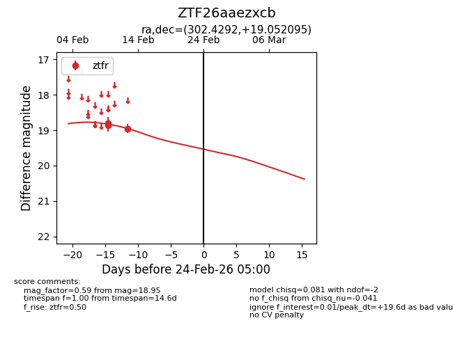
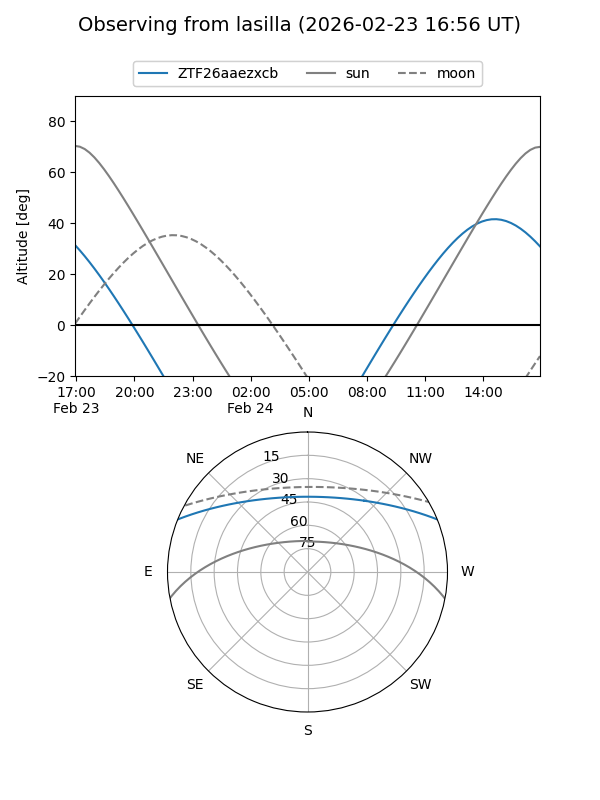
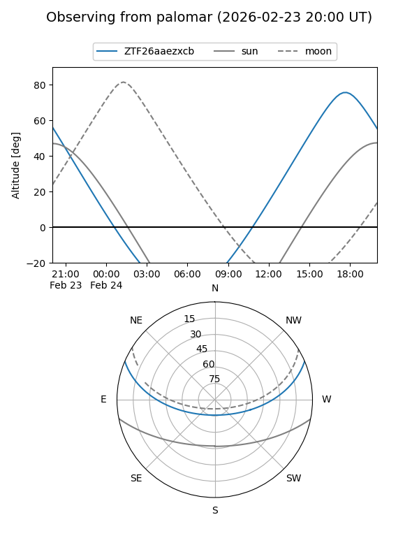

ZTF26aaezxcb
Target ZTF26aaezxcb at 2026-02-24 09:08
Aliases and brokers:
FINK: link
Lasair: link
ALeRCE: link
alt names
ZTF26aaezxcb (ztf,fink_ztf)
Coordinates:
equatorial (ra, dec) = 302.4292,+19.05210
equatorial (HMS+DMS) = 20:09:43.00,+19:03:07.54
galactic (l, b) = (58.9578,-7.63888)
Flags:
Photometry:
last ztfr=18.95
3 ztfr detections
Lightcurve

Visibility


Additional plots